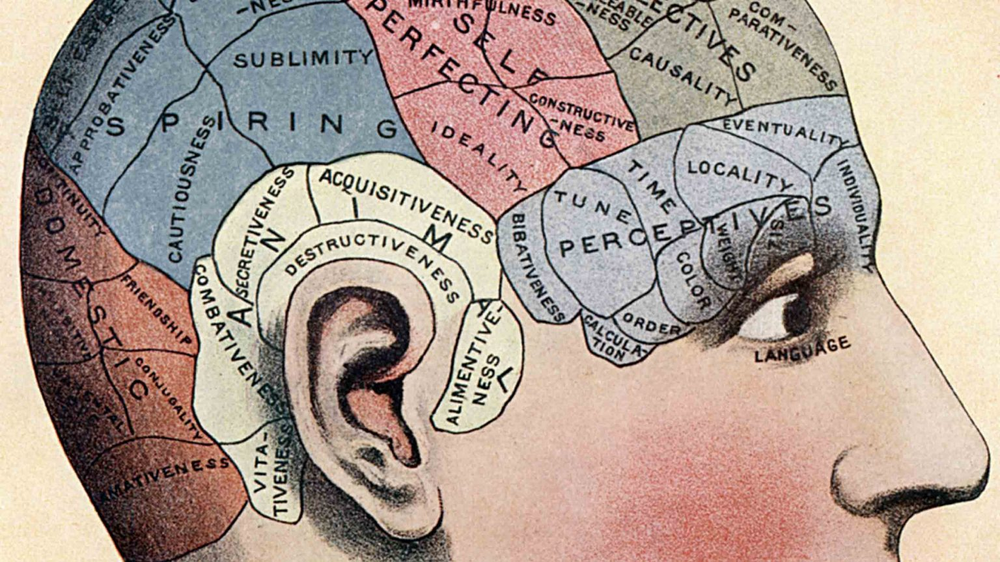

El efecto del arte en nuestro cerebro
Cuando nos enfrentamos a una producción artística nuestro cerebro trabaja para darle forma y sentido a la información que nos llega
Es decir, tenemos una habilidad innata para organizar formas y patrones de manera que consigan tener sentido.
Nuestro cerebro es capaz de reconocer las formas de una pintura, sus líneas y sus sombras, de forma inmediata. Nuestros cerebros tratan de reconocer caras en casi todo lo que vemos. Esa tendencia se debe a que el cerebro está acostumbrado a buscar la familiaridad con los objetos a partir de patrones o formas, incluso cuando la información
nos enfrentamos a una producción artística, nuestro cerebro trabaja para darle forma y sentido a la información que nos llega. Es decir, tenemos una habilidad innata para organizar formas y patrones de manera que consigan tener sentido.
Independientemente de esta capacidad, ahora también sabemos que el efecto del arte en nuestro cerebro es similar al que tiene mirar a la persona amada: aumenta el flujo de sangre al cerebro hasta un 10%.
Cognición encarnada
Es por eso que la visualización de un paisaje desértico puede producir sensación del sol tocando la piel o Otra tendencia que tiene el cerebro es el de querer ubicarse “dentro” del cuadro. Las neuronas espejo convierten las imágenes del cuadro en emociones reales.Eso es la cognición encarnada.
Cuanto más se analiza la obra, más dentro se ubicará nuestro cerebro, que “traducirá” el mensaje del cuadro a emociones humanas
Es por eso que la visualización de un paisaje desértico puede producir sensación del sol tocando la piel o incluso calor.
La química cerebral
En una serie de experimentos pioneros de mapeo cerebral, el profesor Semir Zeki, un neurobiólogo del University College de Londres, examinó los cerebros de los voluntarios mientras observaban 28 imágenes.
Descubrieron que la misma parte del cerebro que se excita cuando te enamoras de alguien se estimula cuando observas grandes obras de arte o imágenes de gran belleza
Ver el arte desencadena un aumento repentino de la sustancia química para sentirse bien, la dopamina, en la corteza orbitofrontal del cerebro, lo que produce sentimientos de placer intenso.
Se sabe que la dopamina y la corteza orbitofrontal están involucradas en el deseo y el afecto, que evocan sentimientos placenteros en el cerebro. Es un poderoso efecto a menudo asociado con el amor romántico y el consumo de drogas de uso recreativo.
Creando arte

Si el simple hecho de observar arte produce este tipo de respuestas en el cerebro, involucrarse en el proceso creativo va mucho más allá. Crear arte, en cualquiera de sus variantes, revitaliza el cerebro de maneras que se distinguen de simplemente observarlo.
Los estudios han asociado un efecto del arte en nuestro cerebro se relaciona con aumentos en la conectividad funcional en el cerebro, junto con la activación mejorada de la corteza visual
Los investigadores comparan la creación de arte con ejercicio para el cerebro e incluso sugieren que, de manera similar a cómo el ejercicio físico ayuda al cuerpo, crear arte puede ayudar a mantener la mente aguda y lúcida en la vejez.
Arteterapia y clases grupales de pintura
Ambas se han consolidado como una tendencia creciente. Las clases de arte en grupo en los estudios locales e incluso los bares te permiten socializar con amigos mientras creas una hermosa obra de arte. Incluso los libros para colorear creados para adultos. Estos te ayudan a relajarte y quitar la tensión de un día estresante.
El arte aplicado a terapia es una herramienta de proyección muy efectiva
El desarrollo de habilidades artísticas mejora enormemente la atención, el estado de conciencia y mejora el control emocional, el autoconocimiento y la autoestima.
Además, ayuda a resolver problemas que afectaron en el pasado y que se manifiestan en el presente. Este efecto del arte en nuestro cerebro se utiliza con personas que padecen estrés postraumático resultante de conflictos bélicos, abusos sexuales o desastres naturales. Se ha demostrado también efectiva en individuos que sufren enfermedades físicas como el cáncer, la demencia o el Alzheimer, así como en numerosos trastornos de índole psicológico como la depresión y la ansiedad.
La reacción del cerebro a los estímulos visuales de una obra de arte es solo la primera parte de un proceso de varios pasos. Comprender cómo mirar el arte le permite aprovechar al máximo la experiencia manteniendo su cerebro activo e involucrado. Comenzar un proceso creativo propio suele ser el siguiente paso.